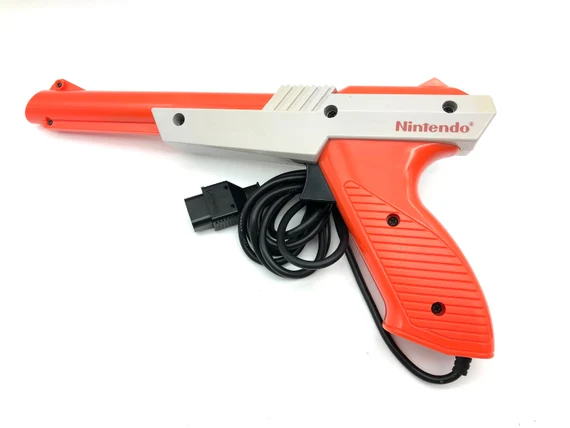
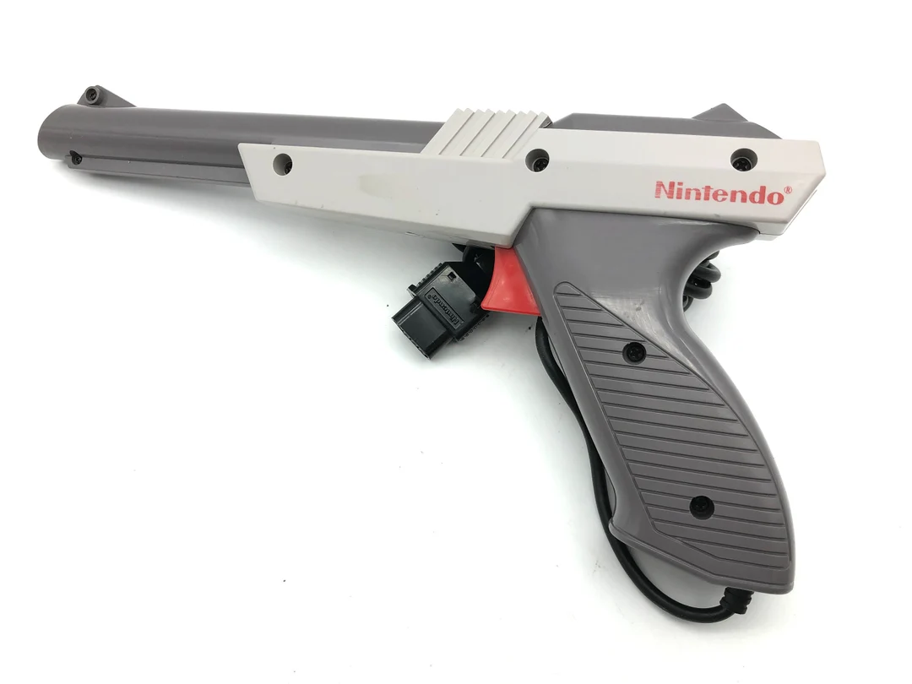
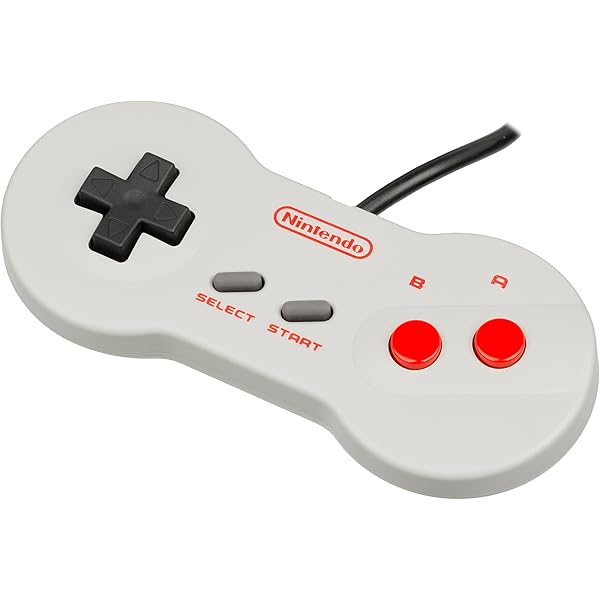

Zapper Gun


The NES Zapper is a lightweight, pistol-shaped light gun controller for the Nintendo Entertainment System, famous for games like Duck
Hunt. Available in both gray and bright orange versions, it uses a built-in light sensor that detects timed flashes on a CRT
television to determine whether you hit a target. Its simple point-and-shoot design made it one of the most iconic and recognizable
accessories of the 8-bit gaming era.
NES Controller


The original NES “brick” controller is a small, rectangular gamepad with sharp edges and a simple, iconic layout featuring
a cross-shaped D-pad, red A and B buttons, and Start/Select in the center. Its flat, boxy design wasn’t the most ergonomic,
but it became one of the most recognizable controllers in gaming history. The later “dogbone” controller kept the same button
arrangement but introduced a rounded, curved shape that fit more naturally in the hands. Inspired by the smoother feel of
the Super Nintendo controller, the dogbone offered a more comfortable and modern experience while remaining fully compatible
with all NES games.